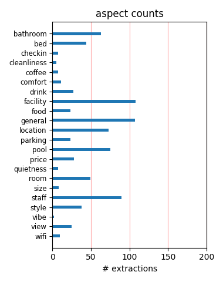
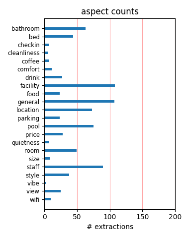

A family of 5, we had a fantastic time. If you are looking for luxury this is not for you, however if you want value for money, great accomadation and fantastic staff this is !! We will be back next year for sure, the kids will make me.
travelled here on 13may 2009 very good set up condos very neat and everything you need is in them.There are 3 pools within the resort .disneyland 3mile away just exit on to osceala parkway and you are there. great holiday will definately return!!!!!!!
This place is beautiful! If you stay, be sure to ask for a newly refurbished unit as they are much nicer and updated with new TV's, new beds, and new paint/furniture. If you are looking to stay short or long, this is the place to stay! Awesome value for your money!
PROS: Large unit. Walking distance to Publix, Olive Garden, Subway, etc. Nice pool & tennis courts. Newly renovated units and office. Nice playground. CONS: Need a car - limited shuttle service. Far away from theme parks, but relatively easy drive to Disney and Universal.
Overall hotel is average, but kind of old. I’ll think that you can get better deals. Reviews of this hotel are too high. Best thing about staying here is the discount you get for the Fantasy Surf Attraction ( http://ultimateindoorwave.com/) that’s close to the resort. Try it´s 100% fun!
Stayed at this location 3 times over the last 7 years and everytime it improves. It has now had a complete face lift and is a great place to stay on vacation. The kitchen in the villas is great and well equipped or you could use the new free on site BBQs or just 5 mins walk is some great Restuarants.
this hotel was terrific! i am really late putting in a comment and only remembered because i am booking with them again.They were very helpful with every question that i had.I love this hotel and i would tell anyone to stay here i have told everyone that i know about the wonderful experience that i had with this hotel.
Rooms are great. Very clean, spacious, and modern. Absolutely floored by the waterpark. Zero entry pool is great for the kids, lazy river, waterslides, jacuzzi's off to the side and in front of a gorgeous stone fireplace, even a kiddie splash area. Bar is really nice too. Can't go wrong staying here, worth every penny.
we got there on the 9 sep the kids love there room very clen the pool was great just acorss the road from are houes all the staf wear so help full nothing was a prolem i would stay there the next time wee go back close to all the disney parks and hand to the shopes it very good had the best hoilday thanks to staying there
Place was good size for a family of 4. The downstairs shower in the unit we stayed in was aweful unless you like to be attacked by the water and it came out so HARD and the area was very small. The furniture was outdated maybe like early 80's type style. As for the kitchen great size but we are on vacation so did not use to much.
I rented this place for our first Disney World trip and was not disappointed. The rooms are clean and spacious. Full sized fridge, stove and dishwasher. Compact washer and dryer. The only thing I would have to say was not great was the decor, think 1970's. If you can get past that then you will have just as wonderful stay as I did.
Would just like to say that after seeing some reviews on fantasy villas i was a bit sceptical about what to expect,i need not had worried, The accomadation was superb everything looked brand new and was a 2 bed terraced house basically. The complex was spotless with lots of events for kids. Overall i would recommend this resort to anyone.
The 2 bedroom town houses have everything you need for a value vacation in Florida. They are clean and well equiped. They are also close to EVERYTHING. Right in the middle of all attractions yet not too noisy. The pool and bar are open until midnight. The kids and adults loved this. All in all a great place to stay without spending a fortune.
Very friendly and helpful. Villas were tidy and well kept. Lots of things for the kids to do. Restaurants close by and a Wallmart not very far away. Free Shuttle bus to Epcot, Seaworld and Universal Studios saved on the driving as you can get to all the parks from these 3 places. Think the only downfall for this place is that you have to go home.
I was concerned after reading some of reviews on this site. We arrived from England and were well impressed with our apartment. Clean, well equipped and a good size. Pool and gardens were well kept. Ideal for the parks and local resturants. Quiet location although some apartments do back on to road so we were lucky . Would definetely use again and recommend to others
It was very comfortable, clean and stocked with things we would need for the first few days of our stay. Nice kitchen with all you need for cooking, etc...Washer/dryer inside the apartment, pools, hot tub, poolside bar, friendly staff! Great place to stay! **10 minutes or so to Disney parks, free shuttle** Walking distance to some common restaurants and Publix grocery store.
Stayed for a week and had no problems. Not the Hilton but for the price can't be beat, again if your looking for the best of everthing look somewhere else. Clean and very close to all the Disney parks, take the Turnpike and pay the .75 and no traffic to deal with. Shop at the Walmart around the corner and save some cash on breakfast and dinner and snack foods. Would stay again.
We have stayed at Fantasy World Resort now six times and would never stay anywhere else. Home from Home. All the amenities you need, 3 pools, jacuzzi, bar, tennis, basketball, BarBQ pits, childrens play area, bar! childrens arcade, on site shop, buses to attractions and fabulous staff. Homes are fully equipped and well appointed. Guaranteed fabulous holiday and near to all attractions.
OK people I read reviews before and after I booked read some bad reviews and also good .Let me say for the people and familys that left bad reviews You must want alot!! or are never pleased we stayed at this resort A1 all the way .Staff were more then willing to help .Great rooms beds were great water park was #1 realy had a great time Thanks Fantasy world we will be back excellent spot .
The good: Convenient to the Parks. Great pool and amenities, playground, bar, pool, arcade games. Great price. The bad: horribly cheap, uncomfortable beds, stinky sulpher water, not as clean as I would expect. Dusty, and long black hairs on my linens. Wear a hair net people! Also, the slides are not for the faint at heart. Never been on one as fast as the yellow one. Too scary for kids under about 10.
My friends and I went down the Orlando the first week of January. We enjoyed staying at the resort. The room had a lot more to it than the website let on. The kitchen had everything you need. .The living room is spacious. Both of the rooms upstairs were nice. One has two twin beds, so it was a little funny, but I'm sure it would be good for kids. The price was right and it was relatively close to Disney World.
This place has it all, especially for the price! Its about a 1/2 hour to Disney -- to the front gate, after you drive there, park your car and take a boat / bus. Its close! Everything you'd ever want is nearby. The main pool is a good size and the hot tub is HOT! Only criticism would be the unit's dishwasher was a bit loud; which was easily fixed by running it while we were out. It was very quiet and very clean.
I was robbed in my room over $1000 of cash and other goods. The managment did pretty much nothing. They said sorry but insurance will not cover your stollen goods. The villas were older but the staff did try to maintain the place. I was just not getting broken into. I found out later that this room was broken into before and the glass sliding door lock was not fixed. .The price was good just make sure your locks are secure.
We stayed with family and friends for two nights at the end of our cruise. Each place was clean and spacious and very sufficient for our needs. It was nice to lots of space for 10 of us in two condos. The staff was very helpful. We made use of the free bus transportation to Disney World Epcot Centre. The pool and facility were also great. We would definitely stay here again. The area was under construction for expansion, so I'm sure it will only get better.
It was exactly like the photos. Amazing holiday. Secruity took us to our villa because we arrived late at night and couldn't find it. Very friendly staff. Lovely places Disney is great not just for kids. Walmart good for shopping. Gift shops and restaurants near within walking distance. Need car. Must be 25+. E-Z cars for younger drivers Shuttle service to parks excellent. Weather hot & humid througout. Rained & tropical storm 2nd week. Weather very unpredictable.
I was pleasantly surprised with Fantasy World after reading mixed reviews prior to arriving. The villas were perfect for our family of five. The pool/waterpark was amazing. Bar had happy hour specials everyday. All of the staff we encountered were friendly. We stayed in the Wet and Wild court which was close to the pool. Their are many eating and shopping places in the area which are just a couple minutes drive away from the resort. Would definitely stay here again.
This was a great and spacious place to stay with my family. We have three children and there was enough space for everyone. I would recommend that you rent a car, there is a bus that brings you to the park, however, it only come at 8:30 and 11:30 in the morning, and brings you bace before the parks closes. Very equipped kitchen and there shopping centers which helps save on food expenses. Washer/dryer pick up extra detergent. I am returning next year and plan to stay here.
I chose this resort for the tennis, basketball, pools and location. But I was really impressed with the service. They went out of their way to please us, they even changed the lights on the tennis courts just because we mentioned it. You can play sports or swim until midnight. I have traveled around the world and stayed at 5 star resorts and have not recieved that type of coustomer service. Thanks to Deana, Arnaldi M, Carolina, and the rest of the team, for making our stay enjoyable.
We got an updated condo near the back in Rosie O'Grady court. It was identical to the pictures on the web. It was clean, quiet, and we felt safe. There was a nice grass area behind the condo where our kids got to run around while we were hanging out on the patio. The only complaints that I have are that 1) the kitchen isn't well stocked for cooking, and 2) the washing machine was crazy loud. All things considered, I would totally stay here again, I'll just bring my own salt and pepper.
My family of four stayed there this past week. The check-in was a breeze. Our condo was very clean. The air conditioner felt like the artic. I felt very safe there. The place was very well lit and I saw security patrolling the area like every 10 minutes. There is a Quiznos, Olive Garden and Cici's Pizza right next door. The pool was very nice and warn at night. We has plenty of towels. The condo was stocked with every thing you needed to feel right at home. I would definately stay here again.
I have been to Orlando many many times and this is the first time I stayed here. It was great. My 19 & 14 year old sons love it. Pool area is fun and great for any age. Activity center was a hit with them. Also included were 2 tickets to Fantasy Surf - my kids had a blast. It was conveniently located to the parks. Rooms were clean. Only complaint I have is that the TVs were outdated, but we didn't spend much time in the room anyway. Highly recommend this place especially if you have teenagers.
we booked for 7 nights with Expedia travel, reviews were both good and bad but we thought we would give itt he benefit of the doubt...............1950's would be a good description, the pool looked like it was out of a hollywood museum! home was clean, green nylon carpets throughout, and beds were clean and comfortable. area was very noizy, police cares frequent through the night and lots of people wandering around? we booked out the next morning as staying there would have ruined our holiday completely.
The pool at this resort is amazing. The children in my party, ages 17,14,12,6,and 4, all had a blast. The villas were a little smaller that I had expected, but they were clean and well stocked. The "queen" bed in the master bedroom was actually two twins pushed together. Therefore, the middle of the bed was a very hard board. It made sleeping uncomfortable. When I complained about this at checkout, the clerk replied that all the queen beds were like that. With different beds, this could be a great place.
Stayed there the week of August 5 through August 12. The furniture is a bit run down. The walls could use a coat of paint. Mattresses are uncomfortable. Amenities are convenient, they have everything you need if you want to cook and save some money. Supermarket (Publix) is within walking distance. Shuttles to the parks are convenient, but only run two or three times a day. They have a dishwasher and washer and dryer. Pool was warm, but don't know if it was because weather was very hot or if it is a heated pool.
We have chosen this place three times and we will again. It is a great location. The townhome has lots of room and 2 showers. The laundry facilities are small but they do the job. I love the full size fridge. It's great for freezing drinks to bring to the parks. There is enough dishware for 6 and little extras like dishsoap and garbage bags. I found the pool to be a good size. There is also a hot tub and a bar. The best feature of this place is the free shuttles to all of the major parks. You don't even need a car.
Just returned from Fla. My wife, my grandaughter (13) and myself. Fantasy World was great. No complaints. Staff was just great, very freindly and helpful with all our requests.Liked it better than some big time hotel .Just felt like being at home. Downstairs bathroom was a little small, but I was able to use the shower stall, and I weigh 275. Area was great, convienient to everything. Only problem was the weather, a little to cool. My grandaughter didn't get a chance to swim although one of the two pools was heated.
We were in Florida with me, my Mom, my bf, and a 14 and 18 years old girls. The place is very clean, there are 2 bathrooms, which made it easier to get everyone showered and ready. they have a washer/ dryer right off the master bedroom, so it was pretty nice to come home with no laundry to do. The staff was very helpful. You are very close to the attractions. Right down the street are all the resturants. the pool and jacuzzi were nice to go to at night. It was a very good price for the place. Was enjoyed by all............
Returned on 1st November from 2 weeks at Fantasy Villa's. Our 11th stay here since 2000, and it is better than ever, mainly due to the amazing new pool complex. You could not wish for anything better from the pool area/recreation building. I aren't going to go into detail here, as I have reviewed it before at length, but just felt I had to say that this resort is fantastic value. It's not the Hilton, but at £50 per night, you will not get better. For this standard elsewhere, could be up to £150 per night. Keep up the good work!
The hotel is well located, not far from main parks. The units are spacious, on 2 floors with 2 real bedrooms, 1 large living room with kitchen. Ideal for large families or parties. Our unit was far from the main pool, becareful that near the pool, it can be quiet noisy, as the pool is opened till midnight, with music. You can easily live in these units as at home, with all the necessary stuff to cook. We had an issue with the garden door, but it was solved in a friendly manner, the guy being obviously used to this. We really enjoyed this hotel.
We stayed here Oct. 27 -31. The staff is very friendly. The pool is very nice. The villas are very nice. There was everything you need to cook with pans, dishes, silverware. The washer and dryers were a big plus. It was a very clean resort. You could walk to Olive Garden, Arby's. I would stay here again for sure. The kids loved it to. They also have a store with just about everything you may need. You can buy Universal tickets there too. You can not go wrong by staying here. It is way better than staying in a regular hotel room. It is just like a little apartment!!!
Condos were spacious, well appointed and clean. The resort was recently remodeled, so posts saying it is old are probably prior. Loved having the W/D in the unit. Kids could have spent half the trip at the resort... The pool area is clean with a great lazy river, hot tubs and water slides; pool temp was perfect too. Only wished there were a restaurant on site. Food could be ordered but not a huge selection. Lots of stores and restaurants nearby. Within 10 min of parks. We will definitely go back with kids. Maybe not the choice for a romance getaway as its mainly families.
We had a terrific time, I went with my husband my two daughters 18 and 21 and my son with his fiancee. The villa was beautiful, everything what we expected. The inside of the villa was comfortable for the six of us, we all slept so good, I didn't even miss my home. Everything was close by even Disney World. We went grocery shopping at Walmart Supercenter which is my favorite place. The pool area was great. We loved the place so much that my husband and I, we are thinking of moving to Florida in a couple of years or even sooner. No regrets at all. The Rivera Family from Cliffwood Beach, NJ
Fantasy World Villas performed very well in that it provided exactly what it was designed to, and at a good price - courteous and accommodating service, a comfortable setting for a group larger than two without having to purchase two rooms, convenient distance from both major parks, a pool, clean grounds and rooms, quiet at night, an on-site convenience store, front door parking. The couch looked worn and musty but the living room and kitchen area made the villa quite suitable for dinner in and down time with the family. Every hotel might have its horror stories and disappointing stays, but this place does what it says it does.
We didnot arrive until 2 am, it was very easy to find ( right of International Drive), staff was very helpfull at the early hour. Our villa was very clean and supplied (dish detergent, liquid for dish washer, garbage bags, etc). Bed very comfortable,sheets smelled nice and clean, bathroom had everyhting and more. The pool and hot tub very clean and warm. Grounds well taken care of . Close to eating, shopping, Disney parks etc. It is a great place for families ( kids) It was quite. Bartender was friendly and very helpfull with directions and park information. We highly recommend, affordable. WE WILL RETURN. Darrell & Geri Jan 3, 2011
Our family stayed in the townhouse villas and had more than enough room for 5 adults.The decor was great and the appliances were handy.The unit came with a washer and dryer which was very helpful.The front desk staff went out of their way to make our stay wonderful.The location was fantastic! We drove to Disney in 15 minutes and Universal in 25. The kids (teenagers) were never bored since 192(the main strip) has something for everyone to do anytime day or night.If you choose not to cook there are so many restrants close by you could walk to most.On future trips to Florida I will always stay at Fantasy World Club Villas. Best vacation ever.
This location is close to all the parks and some outlet shopping centres a free shuttle service was provided which ran at various times and suited our needs as we did not hire a car. If going to Busch gardens it is $40 return but this is cheaper than car hire.ranging from $60-$90 plus insurance The reception pool and bar areas were clean and the staff were helpful and friendly.The villa was well suited to our needs providing everything you need for a self catering holiday,the washer and dryer came in very handy. Maid service (towels and sheets)once weekly.Large supermarket shops and restaurants within walking distance made our holiday complete.
We have just returned from a three day stay at the Fantasy world Club Villas in Kissimmee. Most of the personnel was nice and helpful. The young man that checked me in was very helpful and extremely nice. I really appreciated that after my twelve hour drive. The grounds are also very kept well. I was however dissapointed with the accomodations. The villa itself was small and there was no carpet in the living area. The most dissapointing part of the unit itself was the odor that was throughout it. I was also dissapointed with the concierge service, each time I needed help the concierge was out. Overall our stay was very dissapointing. I would not reccomend it .
We were 4 adults and 2 small children. The villa was very clean and all items were available to feel right at home. Even though we were not there to just stay in the room it was very comfortable and cozy. The kids loved having there own kiddie pool and playground . The staff I have to say were not that helpful or friendly . Unfortunately one of the adults traveling with us were sick and the front desk would not offer any assistance or gave the right info on where to get to a pharmacy and/or doctor. We did have a great time though and the shuttle service was good but it's a long trip back after a full day . I would suggest taking a cab back it's a lot quicker than an hour or so back on bus!
Our unit was clean and recently renovated. We had no complaints about the unit itself and felt it was well worth the money. The resort is currently undergoing renovations so sleeping in was not an option. I'm not sure why they didn't renovate one "court" at a time and opted to do several units on each court at once. The pools were small and not very close to our unit, however they are building a new larger pool with lazy river that should be completed this summer. There were two concierge that helped us plan our days and rent a car. They were both fantastic, especially David. The resort was within walking distance to several restaurants and a grocery store. We would definitely stay here again.
Friendly and helpful check in staff. Nicely furnished and clean two bedroom villa on two floors. (refurbished in 2007). Fully equipped kitchen, so we didn't eat out at all. Great location with a Publix supermarket within 5 minute drive. Super Target and huge Walmart within a ten minute drive. Located close to Disney but also good access to the freeway so easy to get to other attractions. Although there is a shuttle would ideally need own transport to stay here. Nice pool, friendly people and quiet at night. Screened patio is a bit offputting at first, but keeps the bugs out so you get used to it. Good value for money. Enjoyed it so returned for a two night stay at the end of our holiday before flying back to UK.
BED BUGS!!!! Need I say more. I was told that the sniffing dog must not have gotten to this unit yet. Thank goodness they were only in one bed. It took forever for them to switch our unit, I was so disgusted. Our first morning there to wake up to a bug crawling across the pillow down the back of the bed. Some one came to see and said "yep, those are bed bugs." He flipped all mattresses in the other rooms and showed us that there were no bugs except for the one single mattress in the other room. We washed all our clothing in hot water while we were there and once we arrived home we did not even bring the luggage back in the house. Perfect timing, the garbage truck arrived and all was sent bye bye. NEVER AGAIN!!!!!
We stayed for one week. The villas are very cute on the outside and very spacious. We stayed on Seaworld Court which was nice but thought that the villa could use some updating. Kitchen was nicely set up and beds were comfy. We were a little surprised that they did not provide housekeeping but we probably didn't read the fine print. If you required new pool towels they charged $9.00, also a $5.00 fee if you needed your door card replaced which I thought was a little petty and thought the extra $80.00 fee for the week was a little steep, not sure what this was for if you didn't even get housekeeping. Would probably return but would request a villa that was newer. It was nice having a washer/dryer and location was nice.
This was our first time in America and we were not sure what to expect. The accomodation was fantastic, it was clean spacious and very comfortable. We were in a great location very easy to get to all the parks, shopping outlets etc. We all enjoyed the pool and found it easy to get sunbeds whatever time we went to the pool. The accomodation was perfect for us with the two bedrooms both with TVs which prevented the usual arguements over who was watching what on telly. It was lovely to come back from a long day at the parks to be able to sit and relax then go around the pool for a few drinks a perfect end to the day!! We are looking to go to Floriday again next year and would book this accomodation againg without hesitation.
We have stayed at Fantasy World the past 6 winters. We have found each condo to be clean and well equipped for a rental. If something is missing or not working properly, a quick call to the front desk has solved the problem promptly. Each year we have been here we see the management upgrading the condos. This current year they have added a beautiful water park. The property is not a fancy tropical "resort" but it has provided us with the basic comforts we want in a rental. The front desk has been very accommodating to any request and the location is excellent with several restaurants within walking distance and a good grocery store nearby. A shuttle is available to the Disney area and also a nearby shopping mall. What else can one need?
We stayed here last week, and it couldn't have been any better. The villa was very clean, and the beds were comfortable. Our T.V. in the larger bedroom didn't work very well, but we hardly watched it anyway. There was a pool, playground, and tennis courts, but we didn't use them, we were so exhausted from going to the parks. The villas are about 5-10 minutes from the Disney parks, depending on traffic. Kitchens are fully stocked with all the equipment you could need (dishwaher, coffee maker, dishsoap). The dryer did take a little long to dry the clothes, but It was probably because the lint trap was hard to find, it's hidden on the back to the right. I would definitely recommend this place to everyone, and can't wait to go back next year.
My family and i stopped here in may for 2 weeks and i must admit upon arrival i thought oh no! from the outside homes look grubby but in side was clean and comfortable ,we had all the things we needed eg washing liquid ect ,and 2 shops were only 2 mins walk away for anything else we needed, as was at least 5 restaurrants which was good! the only complaint was the free transport to the parks which left very early in the morning and picked you up at quite late at night with hot days we could'nt stand being in parks for 11hrs at a time!! but it was free so thank you anyway . there was always plenty going on at the pool ,bbq ,discos ,painting comps ect plenty for all. so overall a good place to stay clean ,freindly and close to amenitys .will book here next year.
After reading some of the other reviews, I'm thinking that we probably stayed in one of the older units. We usually stay at one of the lower to mid-priced Disney resorts, so I had high expectations. I should have lowered them. My first impression was that the units look like low income apartments. The dumpster near our apartment was overflowing with garbage. There was trash (cups, cans) scattered on the lawn around our unit, and someone had dumped corn to the right of the entrance to our apartment. The landscaping was sloppy - no mulch around the shrubs. The inside was not clean. The floors were dirty, there were crumbs on the counters in the kitchen, hair on the floor in the bathroom, and the place smelled like smoke. If you are expecting a clean place, don't go here. It's gross.
Two adult couples from Illinois stayed 2 nights before driving over to Port Canaveral to board a cruise ship. We rented a 2 BR villa. Kitchen, DR, LR and full bath (shower) on the main floor. Upstairs was 2 BRs--one with 2 double beds and the other with a queen. Also upstairs was a full bath (tub) and a washer dryer. Pool was fabulous and the Tiki bar had great drinks. It is not brand new but we found it clean and with 3 televisions, everyone could do their own thing. 2 blocks from the road with all the eating places and just down the road to DW (15 min to the gate.) One couple was dropped at MGM for the day and the other couple had the rental car. Just a cell phone call and they were picked up--no prob. All 4 of us agreed that we would stay there again for sure. A great place for families.
We had stayed eight years ago , so wasn't sure how things had changed , the accomodation was booked over the internet so was very reasonable. Because of the size of our party we had booked two town houses , when we arrived they were next to each other as requested. The accomodation is clean and the rooms failly well furnished , the air conditioning is excellent , as well as the showers which never ran out of hot water. A good size tv with 40 channels is in the main living room and the two bedrooms. The pools are good and lots of tennis courts. we didn't use the pool bar but the prices were very good. The two plus points are a, it's very easy to get to all the disney parks within 10 minutes and b, you can walk to good resturants near by . Definetly good value and would recommend it to anyone.
Overall great deal for the money. Loved having a washer/dryer on vacation and a place to escape to after the kids were sleeping. I thought it was plenty of space for my husband and I + 2 kids. The staff was all extremely accommodating and checking in and out was a breeze. Every request was literally delivered within minutes including more laundry detergent! Some villas have a large playground literally in their backyard! I didn't participate in any on site activities but hey had fireworks and a large party on New Years Eve! Now they negatives: the mattresses were very uncomfortable and the pillows were obnoxiously large!! The sofa was old and needed replacement as well. But all in all - I would return in a heartbeat. It was a close drive to all the themeparks and plenty of places to eat and shop!!!
The newly completed pool and waterslide were beautiful and fun although we wished the waterslides were open longer hours. They said it was new and they were still working out some issues with lighting at night. The location was perfect for us: close to food, grocery stores and popular attractions, easy to find and return to at night. Olive Garden was walking distance away. The staff was pleasant but we were a little surprised that daily housekeeping service was not included. Maybe this is standard when renting a condo. The condo was was clean and pretty well maintained. However, some areas of the condo were in need of updating - apparently on-going at this time. The kitchen supplies were a little lacking if full meal preparation were planned. However, overall, we were happy with the accommodations.
Five adults stayed there in May and it was terific. Was a little nervous about the place at first until we arrived. It was very clean. Staff was friendly. Close to all the parks. Alot of restaurants and stores nearby. They offer a shuttle to the parks two different times in the morning and two different times for pickup in the evening. Had a guard in the evenings. May have been there all day but didn't notice him until the evening. Very nice clean pools. Washer, dryer, fridge, microwave, stove, tv, couch, chair, etc. and almost anything you would want. The only one thing I would have liked better and I did see it on one of the reviews was the pillows were small and kind of flat. So if you have a bad neck like I do I would suggest bringing your own pillow. I would return to the Fantasy and would recommend it to all.
We have a family of 6 and this condo was perfect for our trip. The price was amazing and the condo was clean, comfortable and well-equipped. They are in the process of painting the outside of the buildings. Our section was already complete and the interior was very nice as well. We have been to Orlando numerous times and this was perfect for us. When you have 6 people in a family, 2 of them teenagers, 1 hotel room is just too small. All of the Disney parks were very close. I believe on the GPS the furthest away was like 8 miles. My kids enjoyed the pool which was just outside our door. There was always parking right in front of our unit. It also had free wifi. I just don't think you could beat the value. We booked on Hotwire and I kept expecting to get billed an additional cleaning fee or resort fee. (it never happened).
We have returned from a two week stay in these villas. They were very clean and comfortable. The furniutre was all of good quality, although the style looked a little dated. It was equipped with everything you could possibly want - washer, dryer, cooker, dishwasher, blender, hand mixer, toaster - but no kettle! I had to boil up my water in a saucepan for a cup of tea. A starter kit of dishwasher powder, washing powder, soap. tumble sheets and shampoo were also included. The concierge was very efficient and helpful. The villas were spotless. We had weekly housekeeping with the rental, but when this didnt materialise, we had to go and ask. Having said that, it was done very quickly whilst we were out. They are very well located near to Disney and the I4 as well as all the Kissimmee restaurants. Would definitely stay here again!
My wife and I stayed for 1 week in mid January. Currently they are remodling the office area and you check in at one of the units right next door. It was a bit crowded but fairly quick. The unit was a nice and clean with 2 bedrooms up and a kicthen. dining area and a living area with a sofa and chair. The kitchen was fairly weel equiped altough it would have been nice to have an ice makes. Full size appliances in the kitchen. The beds were fairly comfortable and there were TV's in each of the bedrooms. The stackable washer and dryer are great. It was nice to not have to pack enough clothes for the entire week and to come home with clean clothes. The locations is close to reaturants and shopping and only a short drive from the attractions. We went to play golf so it was necessary to rent a car. We would certainly go there again!
My family of six enjoyed the atmosphere of our villa where it felt like a home away from home. Instead of the confinement of a hotel we were quite comfortable; use of kitchen for meals & a washer/dryer. Also appreciated the bathroom showers; forcefull hot water felt good. Staff was very friendly and helpful in all areas. Although the area was very quite, found it slow and would need an overview of more updated exciting, enticing, things to do before or after returning from the parks. Downfall: would like the pool areas updated to include a big water park, more excitement of water activities as well as a separate children's pool for the little ones. Although it was just too hot to be outside, indoor activities could include maybe rock climbing, bowling, etc... Convienence of stores, including Walmart nearby. I would revisit again.
My fiance and I stayed at the Fantasy World Club Villas with another couple for 2 weeks and this place was ideal. The 2 bedrooms gave us plenty of space and the kitchen and living space came in very handy. The whole condo was spotlessly clean (no bedbugs in sight) and was equipped with everything you need. Don't expect maid service, but there is a dishwasher and a washer/dryer if you wish to use them. The Pool area (recently refurbished) had a great pool, water slides, jacuzzis and a lazy river, perfect for our one relaxing day off from the Parks. The pool was open til 11pm too so it was great to have a swim after a long sticky day walking! It's no longer than 15 mins drive to all the parks (Disney, Seaworld and Universal) and ample parking. There is a huge Walmart around the corner and tons of restaurants nearby.I would defiantly stay here again if in Orlando.
We stayed here for two week in October, the villa was brilliant, and close to all the theme parks. The staff are very helpful and friendly, and the complex is great for security. One night we stayed in the pool longer than my sister, and because we didnt have a key she left the door slightly open. When we got back there was someone from security there checking everything was alright within the space of 10 minutes. Also i was ill in the first few days, and we rang the reception up about 10:00pm at night and asked them to get a doctor for me, within minutes they rang back telling us when he will be there and within half and hour he came. The only bad point was ants in the kitchen but this is to be exspected in that heat we was staying in, in America. But even that the next morning someone was round trying to sort it out. I would recommend this place to everyone, it's great for all ages!
Our family of 5 stayed here in October and were extremely pleased with the whole experience. We didnt get off to a good start as we were allocated accomodation that somebody else was already staying in but this was soon sorted and we were allocated a more suitable location in our minds. It was clean and comfortable and was very roomy for 2 adults and 3 teenagers with more than enough equipment from kitchen utensils and numerous towels provided. The main pool area was fantastic but we used the smaller pool nearer to the 192 and had this to ourselves the majority of the time. The location was great to reach Disney and Universal all in 30 minutes or less. Good varied restaurants are all in easy reach and I would especially recommend the Olive Garden which is walking distance. On the whole I would recommend Fantasy World to anybody who wants excellent quality value for money accomodation.
This was our first time staying at one of the time share properties and we were not dissapointed. There were 3 of us and we stayed in a 6 person apartment which was on two levels with two bedrooms an upstairs bathroom and a downstairs bathroom. The accommodation was great, clean and well equipped, we were more than happy. There was some building work being done but we received a written apology on check in and the builders only worked between 9am - 6.30pm to be fair when most people are out and about. There is a good choice of local food and there is a complimentary bus to the parks (although we were not overly impressed with the driver who was sultry and rude). There are three pools - two quieter ones and a large heated pool with bar and music, tennis courts and computer access with printers should you need it. The staff on the desk are helpfu and knowledgable. All in all a good place to stay with the family.
I should have listened when I read that this place looks like a low income housing project. We rented a two bedroom and it was barely enough space for two adults. Rooms are very small, not enough room in the master bedroom for the bed and two suit cases. We used the second bedroom for our clothing. These are two bedroom condos with steep, narrow steps leading to the second floor. We had a unit overlooking a narrow strip of grass, most units overlook the busy entrance street. Several of the windows in the unit would not stay open unless propped up and only one window has a screen! The pool was small, view of the street, overcrouded, and had no chlorine. People at the front desk are very pleasant, but bar service at the pool was terrible! People lined up at the bar to order drinks and the bartender just kept walking by, ignoring the customers waiting to order! I would take the cold in Va over a dump in Fl any day. We left 4 days early.
We stayed 02/27-03/05, 2006. The villa was clean and the decor nice. It offered extra towels, washer/dryer and dishwasher which was great. Checkin and checkout were fast and easy. Housekeeping arrived at our door one morning asking if we were leaving when in fact we weren't scheduled to leave until the following day. When I asked the front desk if there had been a mixup in our checkout time, they couldn't find us in the computer or our info but said not to worry about it. The toilet water pressure was very poor to the point that the upstairs toilet barely flushed. Maintenance thought they fixed it but a few hours later, the toilet didn't flush anymore. We had to use the downstairs toilet. The phone woke us up around midnight the night before departure with the staff asking if we were in our villa when in fact our wakeup call was for 5:00 a.m. the next day. Mattresses and window shades need updating. We probably would not stay there again.
Make sure you don't pay too much to stay here. This place was ok but I'd rate it as a 2 star. The location is good and it was pretty clean. The shower was icky and needed to be regrouted or replaced. The kitchen was fully equipped and it's a decent sized 2 bedroom, 3 bath room. The kids thought the kiddy pool was icy cold but the big pool was a little warmer and it has a hot tub. Fantasy claims to have internet but the only internet here is in the lobby of the reception building. If you claim to have internet, you'd better have it in the rooms! Another thing that made the place seem second rate was the bed bug inspection. Yuck! We came home one night to find a note under the door informing us that they would be entering our room with a dog to sniff for bed bugs. We had to be up and out by 10 am for the dog to come in and sniff our beds. I didn't hear of the results of the search but I think they should throw out the beds and get something more comfortable to sleep on.
Positives - A hop, skip and a jump away from all of the Disney parks. They offer a shuttle but do not advertise it and have inconvenient times, you have to ask the front desk when you arrive. Good for a large family on a budget ( Full kitchen, 2 bathrooms etc). Front desk is helpful. Small pool for the kids. Negatives - It is difficult to find from the highways, there are no signs pointing you to the hotel. No one, even the taxi drivers know where this place is. Room was musty, the bedding was from the 1970's. Grounds are nothing to brag about, it looks like a large apartment complex. You have to rent a car if you do not want to be subjected to their weird shuttle hours. All in all it served its purpose of shelter for the night, but you want to get out of there as soon as you wake up, kind of depressing when you get back from the happiest place on earth. Next time I will buck up and stay on a Disney property rather than Exchange my timeshare. There is a ton of room for improvement.
My family of 5 went to WDW for a week. We started at another Hotel but found it to be too small for 3 active boys. We had heard about Fantasy world Villas and decided to take a tour. The friendly staff allowed us to see their model and we instantly new it would be right for us. (2) levels, full kitchen, (2) bathrooms w/ showers. Nicely updated in 2008. The funny thing was that when I went back to the front desk to change hotels, the best price they could offer me was $165/night. I simply walked about 30 feet to their computer area (free to guests) and booked online through Expedia for $77/night. Be sure and ask for a newly renovated room on the website when you book it- some rooms have not been redone yet! Once we changed hotels we were very happy. No daily maid service- but that was fine with us- we don't change towels and bed linens every day at home either. And despite some unseasonably cold weather- the heated pool was great and the kids used it quite a bit. This was the perfect spot for a family of 5!
Absolutely loved our villa! Having all that room was great! We had a full kitchen, stove, oven, microwave, refrig, stocked full of pots pans dishes utensils, anything you could possibly need. Nice table and chairs, sleeper couch and chair. We didnt use the sleeper couch, so Im not sure how comfortable it was. The couch wasnt really very comfortable, but we werent really on it that much. Washer and dryer were small, but were such a plus. I came home with suitcases full of clean laundry! The only minus was having to do all the housework and stripping the beds and emptying garbage cans and the refrigerator while trying to rush to our early morning flight. I asked about housekeeping services at the front desk, and they didnt seem to know what I was talking about. It was fine, we just had to keep tidy. There were some ants and lil bugs in the bathroom. I bought some raid ant spray and I didnt have a problem again. It is florida, so its to be expected. It was definitely a 3 star resort, with lots of room to spread out!
We recently returned from a week + at the Fantasy World Clun Villas. This is a great place to stay at with children. The units consist of a kitchen and living area on the main floor and bedrooms up-stairs. We found the unit to be well equipped, clean and comfortable. Although, the hotel offers a scheduled shuttle to Disney, we never used it. It takes about 15 minutes to drive from the hotel to the central parking area at Disney. Our children enjoyed the pool area at the hotel and pool towels were provided. Unless you are willing to pay extra, there is no house keeping offered throughout your stay. As the unit was well equipped with both washer, dryer and basic cleaning tools, we managed just fine throughout our stay. The only thing that this hotel lacked was a recycle program. The garbage container we used was full of recycable matters that simply shouldnt be in it. Glass bottles, papers, cans and plastic don't belong on the tip! We mentioned this oversight to the hotel management upon our check-out. Please do the same.
We (that is myself, my husband and grown-up children aged 22, 20 and 16 years) stayed here late August early September 2010 and were all very impressed. The accommodation was very spacious and had everything we needed. The location was excellent. We did not spend many daytime hours at the villa as we were too busy having fun at the parks. The staff were always polite and helpful and when we had trouble with opening the safe on the day of our arrival, they promptly dealt with it. Always felt safe there and one evening I walked back from the pool at midnight with my grown-up children and never felt in any danger. The kitchen had everything we needed, although I must admit we did eat all of our meals out, except for breakfast. Having the washing machine and tumble dryer was a definite bonus. I'm not sure how full it was when we stayed, but it always seemed quiet. I have only one complaint, and that is we had to come home. None of us wanted to leave and if money was no object, but unfortunately it is, would be going back next year.
My husband and I traveled with our two children (ages 2 & 6) and my 18 year old brother, we arrived at around 11:30 p.m and check in went smoothly. All of the staff were friendly and courteous. There was construction going on right near our villa but it was never a problem. The Villa was wonderful!!! Plenty of towels, everything you would need in the kitchen, stainless steel appliances, flat screen tvs, a dvd player, washer/dryer.... and the list goes on. My husband and brother loved the fact that it had the screened in back porch that they could smoke on, instead of having to walk a mile to find a designated smoking area like you do at most hotels. There was plenty of room for all 5 of us. The pool was great (we only went to the heated one), it had a bar and the bartenders were great (they have fantastic strawberry daquiris), they have happy hour daily, and even had poolside Karoeke while we were there. Oh, and the shuttles to Disney were great, never crowded. There is definitley something for everyone at this resort... go you will love it :)
We enjoyed staying here for the week after Christmas 2009. We were here for our son to play in the Disney Soccer Showcase so we didn't use the shuttle to go to the parks. However, his games were at Wide World of Sports and it was a short 10-15 minute drive to get there. The townhouse was great. Plenty of room for all four of us. Full/queen size bed in one bedroom and two twins in the other. Pull out couch in the living room - which my son used and said was comfortable. There are two full bathrooms although the shower in the downstairs bathroom is a bit small. Plenty of restaurants, stores, etc. close by. The area we were in was very quiet and we enjoyed out stay. If we were back in the area we would stay here again. The pools seemed nice. It was a bit cold when were here so we didn't really use them. THe front desk staff was very nice and ready to help if we needed it. While the complex may not be as upscale as some in the area we really enjoyed it. There is wireless internet in the units. We used it many times with out laptop and didn't have any problems.
My aunt traded her time share for this, so we could be close to Disney. Pros....it is very close to all the parks; can save on meals by eating breakfast and packing lunches (the parks allowed us to bring them in), the water park area is great with good activities for the kids, fitness center nice, pleasant staff. Cons.....main negative is that not all the units have been upgraded and we got one that wasn't. It was clean, but very dated. The sofa bed is useful only for small children. The mattress was thin and had no support, so my husband and I had to put it on the floor each night and sleep there. We also had to ask for an extra pillow (the unit had 5 for 6 people) and there were only sheets for the sofa bed, so check early if you need an extra blanket or pillow. We had ants on one section of the kitchen counter, so had to move all the food up and out of the way and be sure that nothing was left out when we were gone. Would have thought that since this was a time share trade (place was not full) that they would have given us an upgraded unit. BE SURE TO ASK FOR ONE !!
This is a really lovely resort in terms of location and the villas are spacious, well equipped and comfortable. There are three pools, tennis courts, basketball and water play areas and the kids loved it. However major building renovations are planned over the next few months and they started whilst we were there. The builders carried on working on the villas whilst we were in residence and one morning we came out of our door to find it taped off with yellow caution tape. Another morning a builder walked into our patio to plug in an electric socket whilst we were having breakfast. We were worried about the loose tiles left of the roof incase they fell down and hit one of the kids. There was also old facia boards lying around with long nails sticking out. We asked the builders to rope things off and/or knock but they did not seem bothered. We did complain to the manageress who was lovely and did her very best to sort it out but as there are major renovations planned throughout this year, you may want to leave it till next year (the renovations look fantastic by the way - will be worth it when done).
We stayed here the last week of September. It was just my husband and myself, but this would be a great spot for a family with 1 or 2 children. The unit was 2 story & had two bedrooms, 1 had a queen, 1 had 2 twin beds, a full bath with tub/shower unit on the 2nd floor & a full bath with stand up shower unit only on the 1st floor. Our unit was very clean and updated. We had plenty of towels since it was just the 2 of us. They also provide a few towels for the pool. There was an in-room safe and hairdryer. The utensils in the kitchen were adequate for what we needed, and they did provide a small bottle of dish soap, shampoo & soap for bathrooms, a roll of papertowels, and a 1 use box of Tide & 2 sheet Bounce for the washer/dryer. The time of year was great - very short lines at Universal but the weather is iffy. Universal is about 20-30 min drive depending on traffic, Disney is much closer. There are a ton of chain type restaurants nearby but I'd definitely rent a car. We joined the local gym in Celebration - about 5-10 min away. There is a Publix, Sams Club, Wal Mart & Super Target very close by as well. Overall, we had a great time and would return if we were going back to Orlando again.
We stayed at this property April 12-15, 2007. There were 5 of us (2 adults, 3 kids) so we needed something other than a hotel room with 2 beds. I was hesitant after reading some of the reviews, but am so glad I booked this place! We got a rate of $110 per night through Hotels.com. This condo had all the amenities one would need. So what if the furniture isn't brand new?? If that's a top priority, plan on spending $300-$500 per night elsewhere. Check in and check out was a breeze. We requested a condo close to the main pool and that's what we got. We rented a car so didn't use their shuttle service. This place had 3 televisions, so no one was ever fighting over it! (but we were there for the parks anyway). Having two bathrooms was great, and they provided an abundance of towels, dishwashing detergent, clothes detergent (Tide) and even fabric sheets (Bounce). I will definitely go back, and recommend this place to anyone that wants to stay at a nice, clean place at a great price. I've also stayed at Westgate Villas in the past, but they were asking $200 plus per night (but yes, Westgate does have nicer furnishings and you may want to pay the extra if you're going to be on the property 24/7 for just R & R).
Me my wife and daughter just returned yesterday from an 8 day stay in Florida visiting my sister and her family who live in St. Cloud. We are missing them and Florida already. Staying at the Fantasy World Club Villas made our visit this year most enjoyable. Check-in and check-out was quick and easy and the hotel staff were friendly,helpful and courteous. The villa we stayed in was emaculate and provided us with all the comforts of home. The beds were a little creeky but the mattresses and the pillows were extremely comfortable. The air conditioning kicked [--] so if you are going in the more humid months you will have no problem keeping cool. Route 192 is right outside the villa property and there are many restaurants, fast food joints and discount gift shops to choose from and all within walking distance On days we did'nt go to a theme park or visit my sister we hung around the villa and enjoyed the pool, played tennis, and in the evening after dinner my wife and daughter would use the gym equipment located off the lobby. I travel on a budget and I've stayed in other villas and this is by far the best experience I have had. Personally I would give this resort a 4 star rating instead of the 2 and a half star listed on Expedia.
I would give this resort about 4 1/2 stars even though my comments may sound negative. The overall experience was a lot of fun. The pool, water slides, lazy river, hot tub,gym was amazing!! The location was excellent because it was very close to both Disney World and Universal Studios. Also very close to plenty of restaurants and Publix to pick up groceries. However, once I woke up to cockroaches in the kitchen and living area and on the ceiling, I felt very uncomfortable and was constantly looking around to see where the next one was going to be. I called to report the problem and maintenace did come within a few minutes with some stray. It seem to help or at least put my mind at ease. Check in was a little annoying. We arrived at 4:00, and they said the room would be ready in 10 minutes. So we went out to get come groceries and came back around 5:00 and they were still cleaning our room. Towels were also a pain. Of course since there is no room service, you have to recycle using the towels, but the dryer in our unit never dried the towels, so we always had to use damp ones. We managed by just taking our towels out to the pool and laying them in the sun for a while. Overall, we had a great time which made our mishaps seem insignificant.
Condos were clean, but the decor and furniture is in desperate need of an upgrade. Again, everything was clean and organized, just ugly. Apparently, some of the condos have been redone, but not the one we stayed in. However, the fact that our condo was poolside made up for the poor aesthetics. This made all the difference, and is highly recommended. 2 bedrooms, and a pullout couch could comfortably sleep 6. 2 full bathrooms with 2 showers, and a well kitchen stocked with utensils, dishes, microwave, coffeemaker, blender etc. (Bring your own coffee, as the "packets" were NOT the best). The pool was fantastic, as was the hot tub. Poolside bar offered $1 drafts and 2 for 1 well drinks most of the day. There was karaoke and a DJ at the pool 2 of the 5 days we stayed, as well as recreational activities and crafts for kids. There is a small convenience store on site, but the condo is within minutes of a grocery store and a Walmart. I would recommend it for families with kids and/or teenagers, as well as students on spring break looking for a cheap and easy chance to sit at a pool and drink margaritas. It is easy to access all of the Disney stuff, and close enough that you can go back and forth from the park without a lot of hassle. All in all, it was an incredible deal for the price.
I went for my first time in Florida - we were picked up from the airport and dropped off at the villas reception - the gentleman behind the desk was polite and helpful - rooms as judged above - lovely clean felt like a small home from home - towels - crockery all the kitchen gadgets you could need - the transport from the villas were ok - felt crammed into the back of the vehicles they used - and you had one or two drop off and pick up times which where sometimes abit binding - so we got a taxi back a few times - tiring if you sent off at 08.40 and not returning till 7 or 8 at night - next time I think I ll drive - just to have that flexability - would have liked some directions in the rooms to the local shops - the local taxi firms were very inconsistant with there charges from the villas to walmart - which was a bit annoying - the villas have basics like toilet rolls washing up liquid etc and delivered more the next week - dont waste packing space with towels they have plenty in bathrooms and provide you with towels for the pool, there is also a washing machine and tumble dryer so I actually came home with no dirty laundry - a good place to stay - clean and we felt safe the whole time we were there - the gym consists of about 4 - 5 pieces of equipment the smallest gym I've ever seen
Arrived on Christmas morning at 4am. Check in took about 3 minutes..................previously requested an updated room..called to confirm on xmas eve., said it should be no problem to grant my request. Arrived in room...room was spectacular!...brand new kitchen, new appliances, fridge was spotless, kitchen stocked with brand new silverware, pots, pans, glassware, also came with blender, toaster hand mixer, knife sets....... Unit was very clean and comfy...new light fixtures, 3 tv's one in liv room, master br, and 2nd br. 2 full baths, stayed in unit 1104. Unit was an excellent amount of space for myself, my 10 yr old son, and 21 yr old daughter. Renting a car is a must!.....didnt rent one until 2nd day. Was able to go to Super Walmart for groceries, etc...unit is also equipped with washer and dryer. We absolutely loved our stay and will def return next year! Be sure to request an updated unit...one family that we met..had a horrible 70's inspired/decorated room...filthy carpet, old appliances..they couldnt believe how nice and modern our unit was..they dealt directly with the owner being these are all owned by private owners...they didnt even get that much of a deal...i book with an onlibe travel site and received a great deal with airfare included. If you stay here u will not be dissapointed!
My family of 4 stayed the week of April 18th to April 27th, my husband/mother/daughter and myself. This is the second time we have stayed within this complex, the first was at the condo towers but this was our first time at the villas. We really enjoyed our stay and found that the villas were definatly the better way to go because of the extra space. They are currently renovating a lot of the villa’s, but were considerate with the construction to happen while you weren’t in your room. Ours had been renovated but the town home beside us were going through construction, but like I said before they did most of the work during the day and not too early in the morning. You will have everything you will need supply wise in the kitchen (cutlery, plates, dishes etc). They have beach towels located in the cupboard underneath the TV in the main room for the pool. The washer/dryer is located on the second level and can be a bit loud so don’t run at night. They also provide enough dishwashing/detergent/bounce sheets for a couple of loads. It’s located right near a 24 hour Wal-Mart for those of you who will check in late. The main reception area was under construction as well, but check in happens in a clearly marked town home near by. The pool was amazing, the main pool has a bar that does bbq. I miss it already!
We stayed for one week 4/8 to 4/15/2010. We are a family of 6. This place was very inexpensive for everything we got. The kids loved the pool which was open until Midnight every night! There is also a mini arcade with air hockey that my kids really enjoyed. For the younger kids, there is an activity room with lots of toys and fun. We played tennis and basketball as well right at the resort. There is also a playground for the kids. We loved the newly renovated kitchen with stainless steel appliances and a dishwasher. Saved us a lot of money on eating out. The only complaints that I have are that the shower curtain was too short for the shower and water leaked all over the floor everytime I took a shower. Also the dryer didn't work well at all. Took 1.5 hours to dry a load of laundry. I was glad to have the washer and dryer in the room though! The primary pool area is a little dated and the screened in back porches are as well, but the kids enjoyed them and there are updates planned. Kerig coffee maker in the lobby with complimentary coffee was a great added bonus!!! Lots of renovations planned for this resort. Looking forward to seeing the renovations next year. Would definitely recommend this resort for families with children as there is a lot to do and the location is perfect. Lots of shopping and parks nearby!
We have just arrived back from our hols on 21st june 2011, I had a wonderful holiday, fantasy surf is a little dated in some areas like the decor but it wasnt awful by a long way, it was extremely clean & comfortable with every thing you need away from home...washing machine & tumble dryer, microwave, iron & board to name a few. We had the added security of a safe in our villa & used it to place all out valuables in, which was very handy, Our villa overlooked the small pool which was fine with me, as we only had a short distance to walk to get there....we had construction of the new lazy river going on but I didnt even notice it as we were placed well away from any noise. The staff were more than helpful, any question or problem I had was dealt with quickly & efficiently. Some people are extemely fussy when they go on holiday, who cares whether you have a green carpet in your villa! your only there for a holiday! All in all dont expect to go there to find a 5* plush, state of the art villa coz you will be dissappointed, My villa looked exactly like the one on the fantasy world club villas website, so if you want to know what they look like check it out, if you want a comforable, clean base from which to rest your weary bones after going round the parks all day then this is the place! I will be going back next year.
My husband & I and our three children, ages 16, 15 and 9 just spent 10 nights at Fantasy World. It was our first Christmas away from home and our experience there was fabulous! Loved that it was decorated for the Holiday, and enjoyed listening to the Christmas songs continue even after Christmas day. Even though the villa we stayed in could use a little up dating, it was perfect for us. If there was any problems, they were on top of it and fixed it right away. The pool, lazy river, gym, arcade and tennis court was awesome!They offered activities throughout the day for all to enjoy. Enjoyed our lunches at the out door bar area, the bartender made us feel welcome and comfortable. Loved the fact that after spending a full day at the overly crowed amusement park, that it was the opposite back at Fantasy World Resort and we could relax at the pool soaking it all in. At the front desk, if there was anything you needed to know, there was a gentlemen that is super nice and made sure you were being taking care of. On Christmas eve I took the kids for a walk around the grounds getting some fabulous shots and especially loved that they offered a Christmas tree for pictures also. Almost any kind of shopping or restaurants are near by as well as the amusement parks. We would recommend this villa resort to our friends. Thanks for making our Holiday a special one.
First things first, This is a townhouse community that was turned into a vacation rental homes. Having said that, don' t expect a luxurious lobby or a fancy restaurant. I went with my wife, mother and 3 children. This place is great for my type of senairo. Anywhere else, I would have to book two rooms. Speaking of rooms, the townhomes are set up with 2 bedrooms upstairs, one with a queen bed the other with 2 twin beds. There is also a bathroom upstairs plus a washer and a dryer. (with detergent). The Downstair is set up with a screen porch, a living room with a pullout sofabed. (yep, this is where I slept), another bathroom, and a full kitchen ( frig,stove, microwave, toaster, dishwasher, all utensils, even a coffee maker) All rooms had cable tv. (3) Great for families with mulitple children & elders. Pound for Pound, this place ranks right up there. I paid $83 per night ( off season ) one Disney entrance ticket cost that much. Now for the downside, The place is a little run down, the decor is cheap, the beds & furniture are on the cheap side. There is NO MAID SERVICE OR ROOM SERVICE. Daily maid service is optional & cost extra. Bottom line is that we come to Disney World for the parks and not the hotels. We hardly spent anytime at the Townhome, just to sleep at night. If you can live with the downside that I mention, this is the right place for you and your family.
This place was perfect. The service at the desk was lovely. We made several phone calls before arriving and always reached a happy and eager to help attendant. When we arrived after having traveled all day, we were greeted with a friendly and knowledgable person. Check in took all of 5 minutes and he was able to direct us to all of our late night shopping needs. Truly a great way to start the vacation. Previous reviews mentioned that it could use a new paint job and a little sprucing up. We could see a touch of that, but for the most part, it was perfect. Clean, tidy, comfortable The fully stocked kitchen was very nice. The beds were a little uncomfortable, but that is because we are used to a more firm mattress. We loved the fact that it was like a little home away from home. No housekeeping knocking on your door every 10 minutes. A washer and dryer in the unit so you could wash as you go. All the basic appliances were supplied along with the basic needs for washing dishes and such. The location was fantastic. Places to eat, shop, or browse all within walking distance. Not too far from any of the parks. A shuttle available if you want. If you want pampering and plenty of attention, go to a hotel. If you are looking for quiet and homey, this is the place to be. Recommended for couples that don't want to be bothered and families looking for a Villa get away. We would stay again. We loved it.
This was our second stay here at fantasy world we enjoyed it so much we decided to return with extended members of family, whom we told how excellant the staff treated us and what a great stay we had We arrived at fantasy world at the end of march and what a disappointment it was when we arrived it was torrential rain which has nothing to do with staff, but when we arrived in the lobby the female reception member looked at us tutted as if we had inconvenienced her and rudely asked us for our paperwork then stood there and she was really uninterested in us beinbg there, she then gave us 1 key card we said there were two rooms again she tutted and said why didnt you say so, rolled here eyes and threw the other key card onto the reception desk she told us the numbers and gave us a map. When we arrived at the villas, they were very clean but had lightbulbs either not working or missing we did phone reception and they did send the maintenace man over straight away who dealt with the problems quickly. There was work going on and it will be wonderful when it is all finished,but it didnt disturb our holiday in any way, Apart from the rudeness and first impression it gave to my extended family we had a wonderful holiday and we found the villas to be perfect for our family and we will go again I just hope fantasy give their staff more training in customer training, the female needs to take lessons from jose who is a joy to deal with and nothing was too much trouble for him.
This resort really is a hidden gem. They just spent 6 million on a total update and addition of a water park and it really shows. The condos are newlrefurbisheded and are quiet comfortable. Ours had a large kitchen with marblcounter topsps and stainless steeapplianceses, a dining room, good sized den with large screen TV, an outdoor screened in porch with table and chairs and a lounge chair, two very nice bedrooms both with new flat screen TV's and two large bathrooms. Then we get to the really impressive part of this resort. They just built an activities building with a nicely stocexercisecise room, sauna, steam room, kids areas, conference rooms, a virtual golf practice area and game room. The center also had free shuttles to all the major parks so don'tdont have to drive or pay the huge parking fees. Then the water park. A very nice zero slope pool, a lazy river, two water slides, a kids splash area and a warm tub as well as a hot tub! The kids can stay busy all day while mom & dad relax. There is also an adjoining surf attraction next door where you can ride the waves or just have fun watching. For the adults the pool has cabana's with coolers and big screen TVs....heavenly. Also a beautiful outdoor pool bar was great and had good food and big screen TV's. All this with a great location just a couple of miles from Disney and Old Town and many nice restaurants in the area, some within easy walking distance. This resort has someeveryoneor everone and I highly recommend it to couples or families alike.
We checked in a couple hours after check in time. Check in was quick. There was a $50 hold for incidentals but it was refundable. Upon entering the room, I was a little disappointed at the size of the living area. There is a large mirror behind the sofa that made me think the room was larger when I saw it on the website. Otherwise, it looked almost exactly like the picures on the website and was adequate for the four of us. One of the barstools was missing, but shortly after I called to report it, another one was brought. My five year old locked one of the bedroom doors and once reported, maintainance came and unlocked it. The kitchen was well furnished and had all the needed utensils, cooking items and other kitchen items including coffee maker, toaster, blender. There is a full sized fridge, stove, and dishwasher. There was a flat screen downstairs but not in the bedrooms in this particular unit. The beds were very comfortable and the washer and dryer was great to have with three kids in tow. It was quiet in the area where we were. Everything was clean and appeared to be in good repair. I was impressed with how convenient it was to a variety of restaurants, Publix grocery store, Walgreens and shops all within walking distance or a short drive of less than a mile or two. This was a plus for me. The Disney parks were a short drive and so was the outlet mall. Universal and Islands of Adventures were probably about a 15 minute drive away. What I liked best was the comfort of the unit and the convenience of the location. What I liked least was that I could not get the same rate for a couple more days.
My Family and I decided that we wanted to surprise my mom with a trip to Disney for her big birthday! We were very excited. There were many hours of searching for a place to stay that was not going to be expensive but would accomodate all of us(including a 1 and half year old). When I found this place online, I was just thrilled. It looked like somewhere we could stay. Our time together was a ton of fun! However, there were several problems. For example, some of our cabinets were broken (that's just a minor thing)...but the day that my Mom and I went to Epcot our trip back to the resort was an awful adventure!!! The weather changed quickly into a thunderstorm. The bus that was supposed to pick us up came and then left within a minute, not looking around for the huge group of us waiting to get back to the resort. Then, my Mom, another couple of families and me were calling the resort to see where the bus was...NO ONE ANSWERED THE PHONE! When someone finally answered the phone, they were of NO HELP!!!! We all waited for almost 2 and a half hours for another bus to arrive to pick us up! And when the driver opened the door for all of us in the pouring rain, he was EXTREMELY RUDE and would only repeat to us that no one was outside when in fact all of us told him that we had been there together waiting for the bus before the bus was supposed to be there! There were NO APOLOGIES from the people who work there, let alone the manager and nothing was done for us after the whole event! So, as far as the company for the trip... that was wonderful and we met a lot of people, but the staff at the Villas were of NO HELP TO US!
My family and I stood at Fantasy for 6 days/5 nights Nov 17-Nov 22, very recent. We had 2 villas. I preferred and requested that our villas be close to one another. Our request was granted. We arrived about 3 hours before check-in. However as soon as we got there, we were greeted with great service and given our rooms which were ready because they knew ahead of time that we would be arriving way before check-in. The rooms were perfect. Good size kitchen, living room, dining area, bathrooms and bedrooms. We were traveling with kids rangeing in age from 4-17 and there were enough activities for all. The location is great! The villa complex is situated about 15-20 mins (give or take) from the Disney theme parks. You have plenty of eating establishments nearby and to choose from. There is also a huge Walmart about 3 mins away if you choose to shop and cook in your villa instead of eating out, which we we did 3 times during our stay. This helps you save money and I totally reccommend it. Overall, our stay was pleasant and I have absolutely no complaints. I do, however, have one suggestion. I have never stayed in a villa before and I guess they have no cleaning service coming in daily to clean the room as regular hotels do? It would be helpful if management would provide a broom, mop and cleaning materials in each room so that guests can clean up at their convenience. There were a couple of times when spills and accidents occurred and I had to resort to cleaning up with paper towels. Not very practical. I totally recommend this establishment. You get everything you need and the price cannot be beaten! I plan on returning when I book my next Disney vacation.